Assembly · Sub-step 4 of 4
Installing Bed Plate and components
Mount the bed plate and tip disposal on the deck, then fit the tip ejector, camera mount and camera onto them.
You will need
Pliers
x 2
x 2
x 4
20–45mm
x 2
x 4
Bed Plate
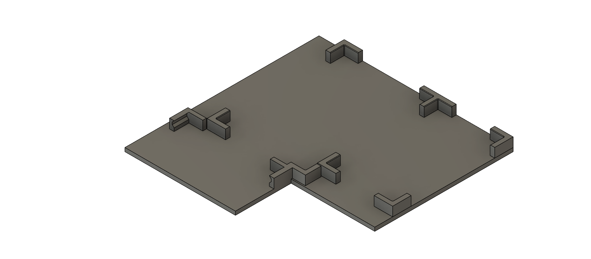
Tip Disposal
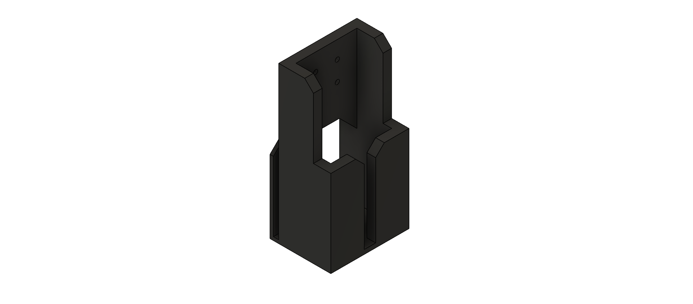
Tip Catcher
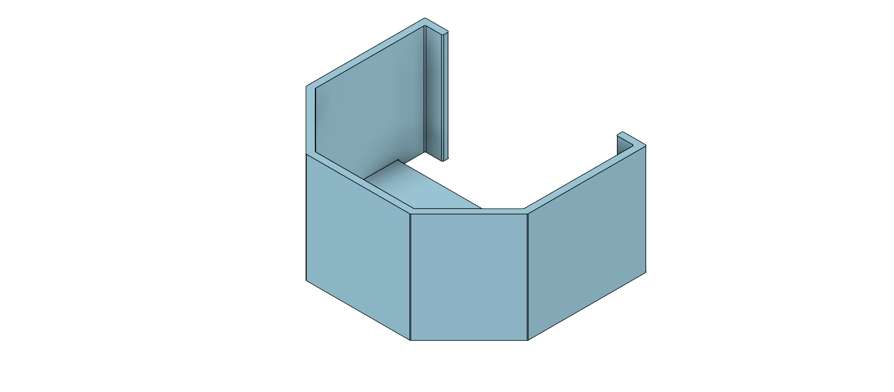
Tip Ejector
Camera Mount
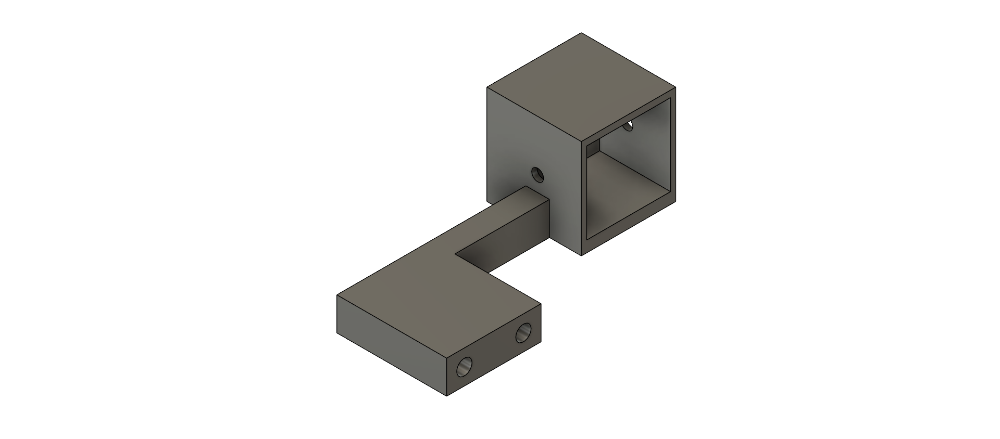
USB Camera
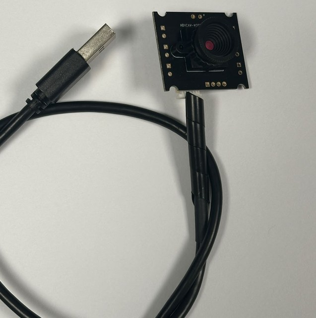
USB extension
(if needed)
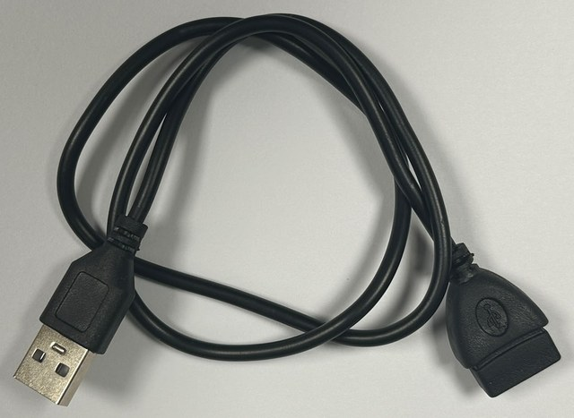
Instructions
-
Remove the magnetic base — it's held on with a very strong adhesive. Use a pair of pliers to pull it off, and if your are finding it difficult ask a buddy to hold the printer steady while you remove the magnetic base.
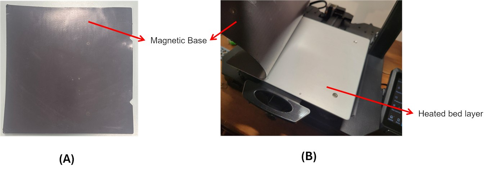
Figure 1: Remove magnetic base. -
You'll find four screws already holding the manual levelling knobs to the aluminium bed. Reuse these screws to mount the bed plate and tip disposal, and if you would like you can swap the existing springs for the 3D-printed standoffs.
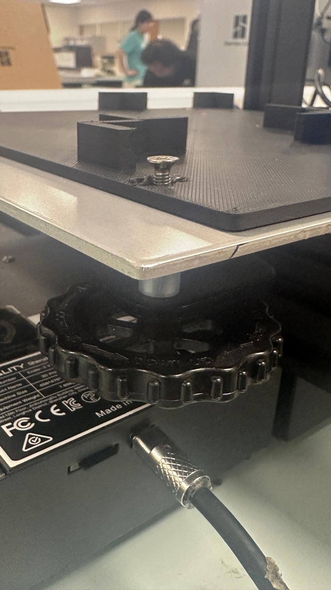
Figure 2: Bed plate corner — the countersunk screw goes through the bed plate and the aluminium bed, then down into the levelling knob. The screw head should sit flush with the plate. 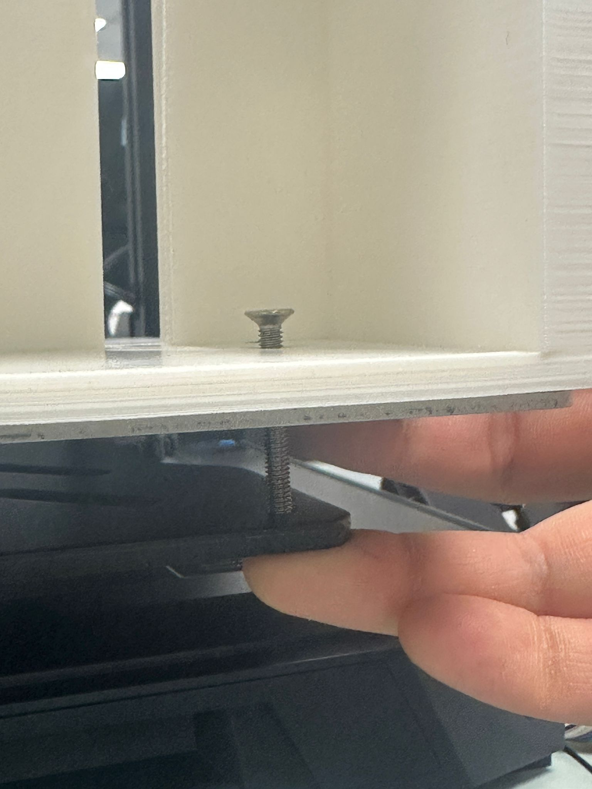
Figure 3: Tip disposal corner — the screw passes through the tip disposal base and the aluminium bed. Hold the knob steady from underneath while you tighten from the top. 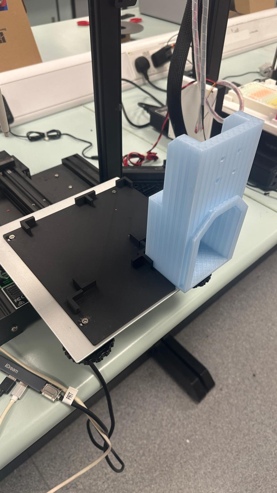
Figure 4: Finished result — the bed plate screwed down at its corners, and the tip disposal mounted on the corner of the aluminium bed beside it. Check both sit flat and don't rock. -
With the tip disposal mounted, attach the Tip Ejector to it. Use the bottom 4 holes and 4x M5 20mm screws.
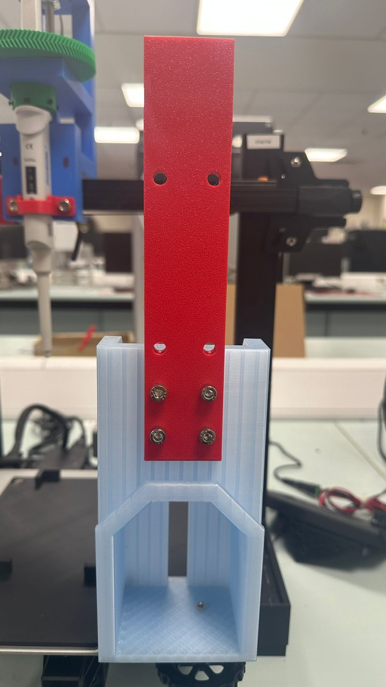
Figure 5: The tip ejector bolted to the tip disposal. The screws go through the bottom four holes — the upper holes stay empty. -
Next, attach the Camera Mount, use 2x M5 screws of length anywhere from 20mm to 40mm.
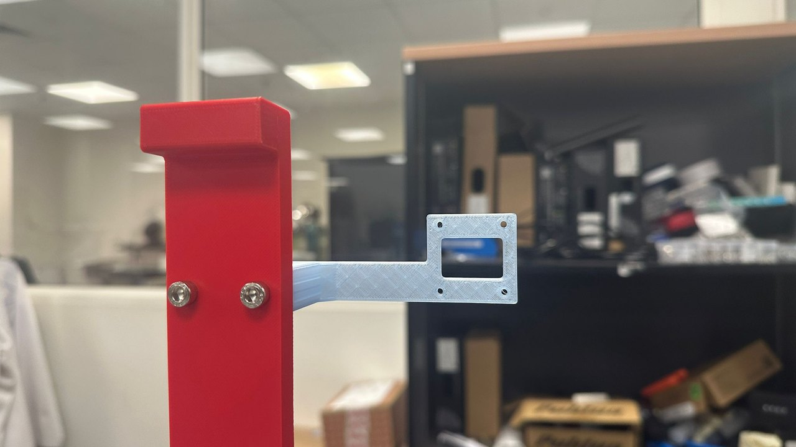
Figure 6: The camera mount screwed to the tip ejector, with the window that holds the camera facing outwards. -
Finally, attach the USB Camera, use 4x M3 4mm screws.
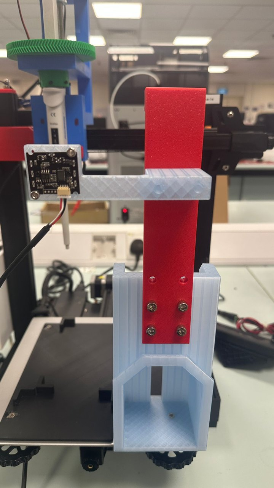
Figure 7: The finished assembly in place, with the camera board fixed into the mount and its lead routed clear of the ejector. -
The assembly shpuld look like this.
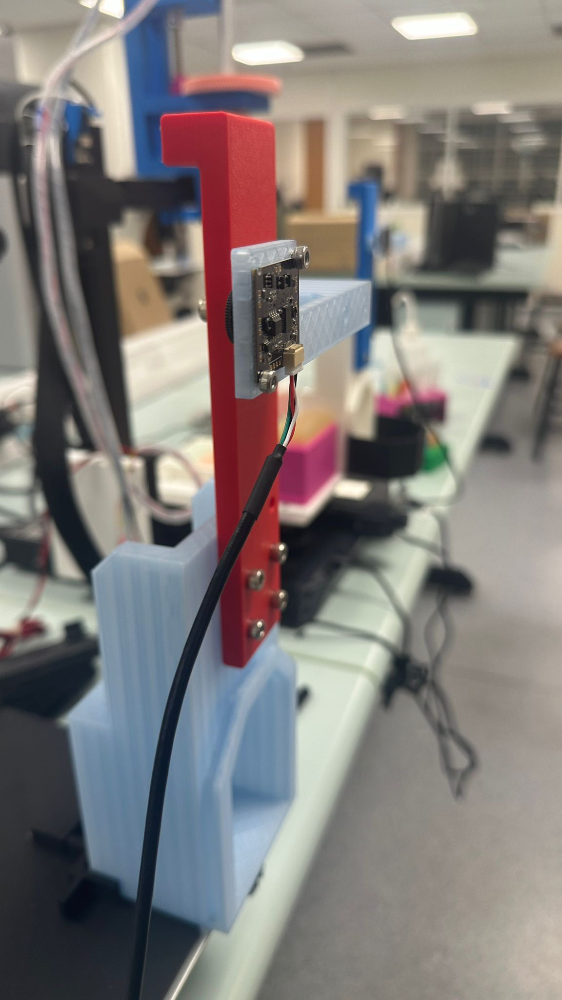
Figure 8: Final setup. - You will need a USB extension for your USB Camera if the cable is too short to reach your computer. A short cable carries the RISK of dragging the laptop along with it when the bed plate moves. Pro-tip: one of our extensions was faulty and was giving us an out of focus image, replace the extension if you face the same problem.
Tutorial videos
Guided tutorial-videos for your convenience.